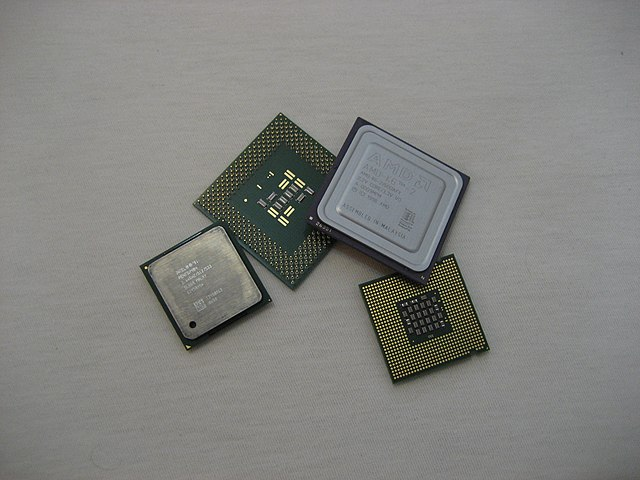

- Hardver
- Felhasználói felületek
- Processzor
- Sínek
- Memória
- Eszközvezérlők
- Linux parancsok
- HTML, CSS, Javascript alapok
- Bash
Wikipédia: Számítógép-architektúra
Alapvető számítástechnikai ismeretek. Számítógép architektúrák, perifériák és felhasználói felületek.
| Hét | Előadás anyaga | Gyakorlat anyaga |
|---|---|---|
| 1. | Számítási modellek. A tárgy célja, teljesítési feltételek. Számítógép történet. Számítógép architektúrák. Neumann elvű gép, adatfolyam gép. | Ismerkedés a laboratóriumokkal, a körülményekkel. Számlaszámok kérése. |
| 2. | A felhasználó szempontjai. Parancs és válasznyelvek, eszközök és fájlok, jegyzékekkel kapcsolatos fogalmak, csomópontok és szolgáltatások, felhasználók és hozzáférések. | Linux login, Jelszóváltás. Néhány parancs gyakorlása. |
| 3. | Felhasználói felületek. Bourne shell (sh). Fontos parancsok. Adatfolyam átirányítás. Fájlnév és parancs-kimenet behelyettesítés. | Unix burok használat. Levelezés, ftp, böngészés. |
| 4. | A procsesszor (CPU). Funkcionális elemei. ALU, regiszterek, vezérlő egység, sínkezelő. Instrukciókészlet. Címzési módok. A processzor teljesítmény és mérése. | Burok parancsok gyakorlása. Keresők a WEB-en. Anyaggyűjtés a CPU-ról. |
| 5. | Teljesítmény fokozás. A processzor teljesítmény növelése. CISC és RISC koncepció. Belső párhuzamosítások: a futószalag (pipe-line) és a szuperskalaritás. Spekulatív végrehajtás. | Burok parancsok gyakorlása. Keresők a WEB-en. Anyaggyűjtés a CPU-ról. |
| 6. | A sínek. Sín tranzakciók. Sín teljesítmény. Vezérlési módszerek. „Híres” sínek. | Burok parancsok gyakorlása. Shell script. |
| 7. | A memória. Félvezető tárolók. RAM, DRAM, SDRAM, ROM, PROM. | Burok parancsok gyakorlása. Shell script. |
| 8. | A memória. EPROM, EEPROM, SRAM. Memória modulok. A lokalitás elve, gyorsítótárak. | Burok parancsok gyakorlása. Shell script. |
| 9. | Eszközök. Vezérlők. Megszakítások. Mágneses tárolók. A CD és DVD. | Burok parancsok gyakorlása. Shell script. AWK. |
| 10. | Eszközök. Képernyők, CRT és LCD. Billentyűzet. Mutatók. Nyomtatók (tintasugaras és lézeres). | Burok parancsok gyakorlása. Shell script. AWK. |
| 11. | Korszerű architektúrák. Intel P funkcionalitás. Esettanulmányok. | Burok parancsok gyakorlása. Shell script. AWK. |
| 12. | Korszerű architektúrák. Esettanulmányok. | Számítógépek szét- és összeszerelése. |
| 13. | Évközi zárthelyi dolgozat. | Számítógépek szét- és összeszerelése. |
| 14. | Gyakorlati kérdések. | Beszámolók. |
Wikipédia: Számítógép-architektúra
Hardver (angolul: hardware) alatt a számítógép fizikailag megfogható részeinek összességét értjük. A
számítógép működéséhez alapvetően hardver és szoftver szükséges, a kettő közötti kapcsolatot a
firmware hozza létre, ami a hardverekbe a gyártók által „beépített” szoftvernek tekinthető.
Egy személyi számítógép hardverének részei általában a következők:
- Ház és tápegység
- Alaplap, processzor, memória
- Bővítőkártyák: pl. videókártya, hangkártya
- Háttértárak (merevlemez, CD- vagy DVD-meghajtó)
- Külső perifériák
Az angol nyelvben ez a szó eredetileg vasárut, szerszámokat jelentett. A személyi számítógépek
megjelenésekor kezdték használni megkülönböztetésül a software fogalmától. Így a hardware lett az
eszköz, amely alkalmas a software (a számítógépen futó programok) tárolására és futtatására. Ősi
formája
a Neumann-féle gondolat, amelynek értelmében a számítógép nemcsak az adatokat, hanem a futtatható
programot is képes tárolni.
Wikipédia: Hardver
A felhasználói felület (angolul user interface, röviden UI) egy berendezés (például a számítógép),
vagy egy számítógépes program (például egy operációs rendszer) azon elemeinek összessége, amelyek a
felhasználóval való kommunikációért felelősek, és a berendezés vagy program irányítását, vezérlését
lehetővé teszik.
A felhasználói felület vagy az ember-gép interfész a gép azon része, amely kezeli az ember-gép
interakciót. A membránkapcsolók, a gumibillentyűk és az érintőképernyők példák az emberi gép
interfész fizikai részére, amelyet láthatunk és megérinthetünk. Az összetett rendszerek, az
ember-gép interfész tipikusan számítógépes. Az ember-számítógép interfész kifejezés erre a fajta
rendszerre utal. A számítással összefüggésben a kifejezés jellemzően kiterjed az ember és a
számítógép közötti interakció során használt fizikai elemek vezérlésére szolgáló szoftverre
is.ember-gép interfészek tervezését az ergonómia (emberi tényezők) figyelembevétele segíti. A
megfelelő tudományágak az emberi tényezők mérnöki (HFE) és a használhatósági mérnöki (UE)
rendszerek, amelyek a rendszertervezés részét képezik. Az emberi tényezőknek az interfésztervezésbe
történő beépítésére szolgáló eszközöket a számítástechnika ismeretein alapulva fejlesztik ki, mint
például a számítógépes grafika, az operációs rendszerek, a programozási nyelvek. Manapság a grafikus
felhasználói felület kifejezést használjuk az ember-gép interfészhez a számítógépeken, mivel szinte
mindegyikük grafikát használ.
Wikipédia: Felhasználói felület
A CPU (angol: Central Processing Unit – központi feldolgozóegység) más néven processzor ill. mikroprocesszor, a számítógép „agya”, azon egysége, amely az utasítások értelmezését és végrehajtását vezérli, félvezetős kivitelezésű, összetett elektronikus áramkör. Magyarra többféleképpen fordítják, így pl. a központi végrehajtó egység, központi feldolgozó egység, központi feldolgozó processzor, vagy egyszerűen processzor kifejezések is elterjedtek. Míg a processzor fogalma már korábban ismert volt, a mikroprocesszor megjelenését csak a félvezetős technológia és az integrált áramkörök kifejlesztése tette lehetővé, az 1970-es évek elején. A processzor alatt általában mikroprocesszort értünk, régebben a processzor sok különálló áramkör volt, ám a mikroprocesszorral sikerült a legfontosabb komponenseket egyetlen szilíciumlapkára integrálni. A mikroprocesszor egy vagy több szilícium kristályra integrált, néhány ezertől több milliárd számú tranzisztort tartalmazó integrált áramkör, amelyben további részegységek különíthetők el, rendelkezik az adatok ki- és beviteléhez szükséges sínrendszerrel, és rendelkezik egy utasításkészlettel, amelynek utasításait képes végrehajtani. A bemeneti eszközök segítségével kódolt információkat feldolgozza, majd az eredményt a kimeneti eszközök felé továbbítja, melyek ezeket az adatokat információvá alakítják vissza. A világ első mikroprocesszorát (TMS 1000) az amerikai Texas Instruments fejlesztette ki 1971-ben, ezt követte az Intel 4004-es processzora, majd további cégek gyártmányai.
Wikipédia: Central processing unit
A busz vagy sín (hosszabb elnevezéssel buszrendszer vagy sínrendszer) a számítógép-architektúrákban
a számítógép olyan, jól definiált része, alrendszere, amely lehetővé teszi adatok vagy
tápfeszültségek továbbítását a számítógépen belül vagy számítógépek, illetve a számítógép és a
perifériák között. Eltérően a pont-pont kapcsolattól, a busz logikailag összekapcsol több perifériát
ugyanazt a vezetékrendszert használva. Minden buszhoz számos csatlakozó tartozik, amelyek lehetővé
teszik a kártyák, egységek vagy kábelek elektromos csatlakoztatását.
A korai számítógépek buszrendszerei betű szerinti értelemben párhuzamos elektromos buszok voltak,
több csatlakozóval, de fizikai kiépítésükben eltértek attól, funkcionálisan viszont azonosak voltak.
A mai modern számítógépek buszai már párhuzamos és bit-soros kapcsolatokat is meg tudnak valósítani,
vagy (elektromosan) párhuzamos huzalozásúak sokcsatlakozósak (multidrop), vagy pedig lánc
topológiával rendelkezők, illetve egy kapcsoló hubhoz csatlakozók, mint például az USB (univerzális
soros busz).
Wikipédia: Busz (informatika)
A memória a számítógépek egyik szükséges részegysége. Memória nélkül nem lehetséges számítógépet
építeni. A memória a számítógép működéséhez szükséges programot és program futásához szükséges
adatokat tárolja.
A számítógépek megjelenésekor, és fejlődésük első 20-30 évében, az elektronikus digitális számítógép
műveleti memóriája (memóriaegysége) adattárakból (tárolókból) állt és minden adattár címezhető
memóriaelemekből (rekeszekből), ezekben raktározódott el a program, a számok, a műveletek
részeredményei. A személyi számítógépek (PC) elterjedésével a szó szervezésű számítógépek helyét a
byte szervezésű számítógépek vették át. Egy-egy memóriaelem 1-8 byte hosszúságú is lehet. A
memóriahely jelölésére szolgáló sorszámot nevezték címnek. Megkülönböztetünk operatív tárat
(memória) és külső adattárakat.
Az operatív tár (a munkarekeszek) közvetlen kapcsolatban voltak az aritmetikai egységgel és a
vezérlőegységgel (CPU). Az operatív tárat az 1960-as években ferritgyűrűkből készítették és
mátrixszerűen kötötték egymással össze. A számítástechnika őskorában, a ferritgyűrűs memória magas
ára miatt kevés munkarekesszel rendelkező számítógépeknél, kiegészítő operatív tárolóknak
mágnesdobokat is alkalmaztak. Tartós tárolásra, nagy adatmennyiség esetén mágneslemezt vagy
mágnesszalagot használtak, amelyek kiegészítő tárolóként többnyire kívülről csatlakoztak a
számítógéphez.
Wikipédia: Memória (számítástechnika)
A számítástechnikában az adapter lehet egy hardverkomponens (eszköz) vagy szoftver, amely lehetővé
teszi két vagy több nem kompatibilis eszköz összekapcsolását adatátvitel és -fogadás céljából.1 Egy
bemeneti adatot az adapter megváltoztat annak érdekében, hogy kompatibilis kapcsolatot biztosítson a
rendszer összetevői között.2 Mind a szoftveres, mind a hardveres adaptereket számos különböző
eszközben, például mobiltelefonokban, személyi számítógépekben, szerverekben és távközlési
hálózatokban használják a legkülönbözőbb célokra.3 Egyes adapterek az eszközökbe vannak beépítve,
míg a többit a számítógép alaplapjára lehet telepíteni vagy külső eszközként csatlakoztatni.
Fibre Channel hostbusz adapter
A szoftverkomponens-adapter egy olyan szoftvertípus, amely logikailag két szoftverkomponens között
helyezkedik el, és a közöttük lévő különbségeket kiegyenlíti.
Wikipédia: Adapter (computing)
A Linux operációs rendszer, a szabad és a nyílt forráskódú szoftverek egyik legismertebb
példája.
A „Linux” elnevezés szigorú értelemben véve a Linux-rendszermagot jelenti, amelyet Linus Torvalds
kezdett el fejleszteni 1991-ben. A köznyelvben mégis gyakran a teljes Unix-szerű operációs
rendszerre utalnak vele, amely a Linux-rendszermagra és az 1983-ban, Richard Matthew Stallman
vezetésével indult GNU projekt keretében született alapprogramokra épül. A Linux pontosabb neve
ebben az értelemben GNU/Linux.
A „Linux” kifejezést használják Linux-disztribúciókra (terjesztések) is, ám ilyenkor általában a
disztribúció nevét is hozzáteszik. Egy-egy disztribúció olyan összeállítás, amely az alaprendszeren
túl bizonyos szempontok alapján összeválogatott és testre szabott programokat tartalmaz.[10]
A Linux a szerverek és személyi számítógépek mellett – elsősorban nyíltságának köszönhetően –
megtalálható sok összetett elektronikus eszközben, így hálózati eszközökben (például routerek),
hordozható eszközökben (például mobiltelefonok, okostelefonok, PDA-k, hordozható hanglejátszók,
órák[11]), háztartási gépekben, szórakoztató elektronikai berendezésekben (például asztali
DVD-lejátszók, videójáték-konzolok, set-top-boxok) is. Bizonyos területeken (például webszerverek,
szuperszámítógépek esetében) a legmeghatározóbb operációs rendszernek számít, ám az utóbbi években
személyi számítógépekre (asztali és hordozható gépek) is egyre szélesebb körben telepítenek
valamilyen Linux disztribúciót.
Wikipédia: Linux
A front-end webfejlesztés egy weboldal grafikus felhasználói felületének fejlesztése HTML, CSS és
JavaScript segítségével, hogy a felhasználók megtekinthessék a weboldalt és kölcsönhatásba
léphessenek vele.
HyperText Markup Language
A HyperText Markup Language (HTML) minden weboldal-fejlesztési folyamat gerince, amely nélkül egy
weboldal nem létezik. A hipertext azt jelenti, hogy a szövegbe linkek, úgynevezett hiperlinkek
vannak beágyazva. A jelölőnyelv azt jelzi, hogy a szöveget képekké, táblázatokká,
linkekké és más ábrázolásokká lehet alakítani. A HTML-kód az, amely egy általános keretet ad arra,
hogy hogyan fog kinézni a webhely.
Cascading Style Sheets (CSS)
A Cascading Style Sheets (CSS) a webhely megjelenítési szempontjait szabályozza, és lehetővé teszi,
hogy a webhelynek saját, egyedi megjelenése legyen. Ezt olyan stíluslapok fenntartásával éri el,
amelyek más stílusszabályok tetején helyezkednek el, és más bemeneti adatok, például az eszköz
képernyőmérete és felbontása alapján váltódnak ki. A CSS külsőleg, belsőleg vagy a HTML-címkékbe
ágyazva adható hozzá.
JavaScript
A JavaScript egy eseményalapú imperatív programozási nyelv (szemben a HTML deklaratív nyelvi
modelljével), amelyet arra használnak, hogy egy statikus HTML-oldalt dinamikus felületté alakítsanak
át. A JavaScript-kód a HTML-szabvány által biztosított dokumentumobjektum-modellt (DOM) használhatja
a weboldalak manipulálására eseményekre, például a felhasználói bevitelre reagálva.
Wikipédia: Front-end web development
A bash egy unix rendszerhéj, amely a GNU Projekt részeként készült. A futtatható fájl neve bash egy
játékos mozaikszó, mely a Bourne again illetve a born again kifejezéseket rövidíti. Ez a korai
Bourne shell-re utal, melyet még 1978-ban adtak ki a Unix 7 Verzió részeként. A bash-t 9 évvel ezt
követően 1987-ben készítette el Brian Fox, majd 1990-ben Chet Ramey vette át a szoftver gondozását.
A legtöbb Linux rendszeren, valamint az OS X rendszereken a bash az alapértelmezett shell. A
Microsoft Windows platformra is átírták a Subsystem for UNIX-based Applications (SUA) használatával,
vagy POSIX emuláció biztosításával a Cygwinnel, MSYS-szal.
A bash-t a GNU GPL licenc alatt publikálták, tehát szabad szoftver.
Wikipédia: Bash